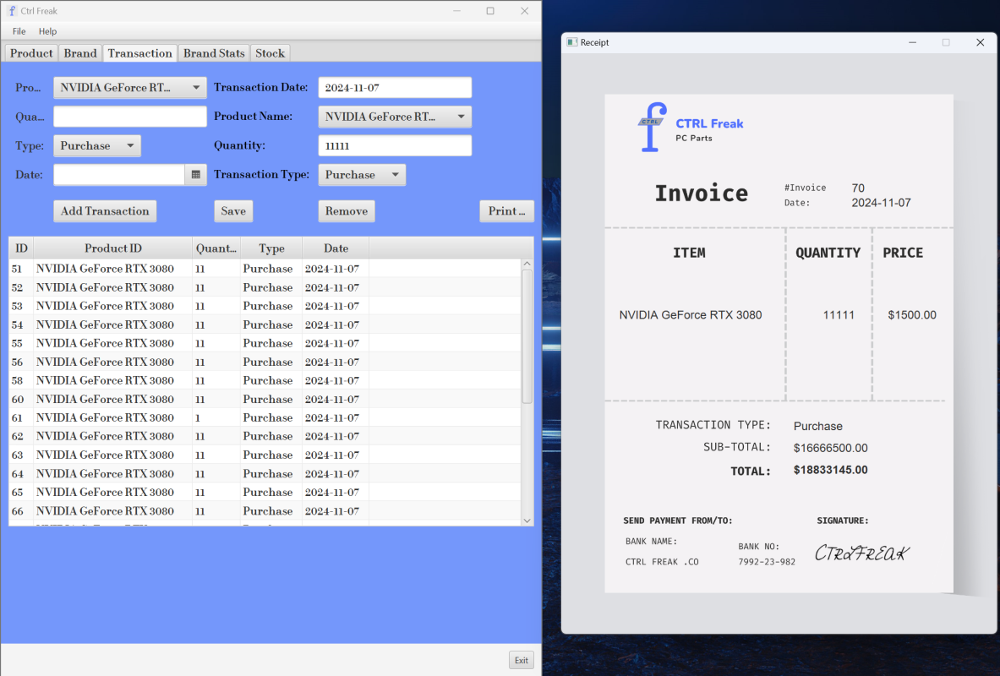
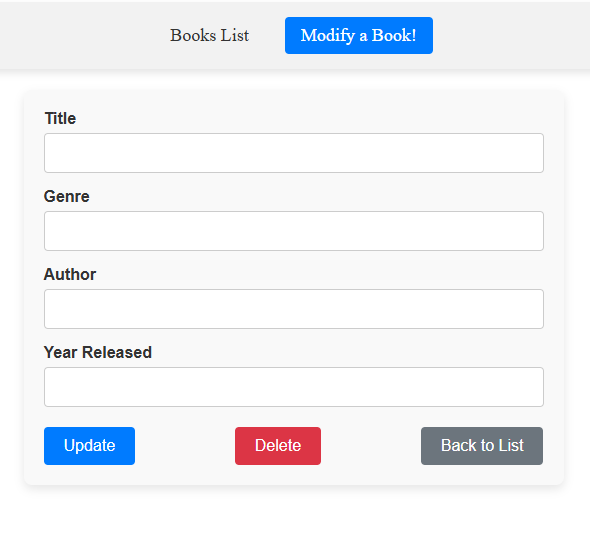

This page is just a small snippet of what projets I have done,
whittled down to those I am most proud of, while also hopefully
showcasing as many of my skills as possible.
Project One - CTRL Freak
This project was a group project, completed with three other classmates this semester.
Designed as a PC Part Store's Inventory Management System, CTRL Freak is a finished
project. The software allows the user to connect to a MariaDB database, and view a list
of not only all the software products, but also a table of all their transactions.
Products and transactions can easily be created, retrieved, updated, and even deleted.
The software is also capable of generating reciepts for transactions, as well as displaying
charts that represent the number of products the store offers per brand, as well as some
statistics regarding product sales.
Skills Showcased:
100% written in Java
Database design and administration
CRUD Operations
Working in a team setting
The table view for the 'products' database table. Also includes the update/delete form.

The table view for the 'transactions' database table. Also includes the update/delete form.
An example of the reciept generated is pictured on the right.
Diagram of our database design.
Project Two - Angular Framework
This project has been an ongoing process over the last four months. Built incrementally in my course on Angular Frameworks,
I have built a simple single page application that manages a catalog of books. The website supports CRUD operations on the books.
Throughout this project, I have become familar with the following Angular concepts: Directives, HTTP Requests, Material Design,
Pipes, Progressive Web Applications, and Services.
Skills Showcased:
Web development basics
Use of a framework
CRUD operations
TypeScript Coding
The main screen of the application. Each book is its own component, displayed dynamically.

The component used to modify/delete a book.
Project Three - ECommerce Platform
This is another project that I created incrementally throughout the semester. This project did involve some files such as
the CSS being provided for us, as it was irrelevant to the course, which was focused on intermediate-level PHP techniques.
The site is effectively a fully-functioning ecommerce auction platform. It connects to a backend database to manage items, bids,
users, and payment reciepts. The site connects to the PayPal Sandbox API, but could easily be adapted to use the live API, and
serve as a real ecommerce platform. Winning bidders and item owners are both emailed when the auction ends.
Skills Showcased:
Intermediate-level PHP
Database access using PDO
Connecting to the PayPal API
Object-Oriented development.
The main home screen, featuring the table of all items currently available for auction.The 'item details' page, where users can bid on items until the auction expires.